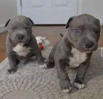
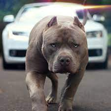
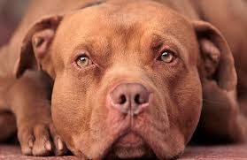
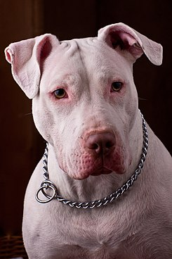

¿Que son los pitbulls?
American Pit Bull Terrier es una raza canina de Estados Unidos que se origino con la llegada de los inmigrantes ingleses que llevaban el standffordshire bull terrier, importado reino unido en el siglo XIX,los pitbull son considerados perros potencialmente peligrosos, aunque dicha peligrosidad depende en gran medida de la crianza del animal. es un can de tamaño medio, que puede pesar cerca de treinta kilogramos si recibe una alimentacion sana y equilibrada, recomendados por los expertos. Se caracteriza por su capacidad atletica y su fuerza fisica.l pitbull es una raza de perro que ha pasado por momentos donde ha sido un can muy querido, pero también denostado debido a la estigmatización que ha tenido por sus características físicas, sobre todo, por algunas pautas de comportamiento. Pero lo cierto es que es un can con un gran potencial como animal de compañía si se le educa de manera correcta y se colman sus necesidades. Al igual que ha ocurrido en otros tiempos con varias razas como el dóberman o el pastor alemán, el pitbull también es considerado un perro peligroso, pero no es esta precisamente una de sus particularidades. La educación que se le dé será la que marque la diferencia entre tener un perro agresivo y uno obediente y social, precisamente dos de las actitudes que distinguen esta raza.
Para mas informacion visitar:
  
¿Porque adoptar a un pitbull?
principales razones por las cuales adoptar a un pitbull son;
- Son protectores y leales
- Son muy inteligentes
- saludables
- Son muy activos y aventureros
- Comportamiento y una conducta intachables
- Es una raza guardiana
- Es muy tolerante con los pequeños y los adoran.
- Les encanta aprender cosas nuevas
- Es excelente en defensa
- Es un perro perseverante y combativo